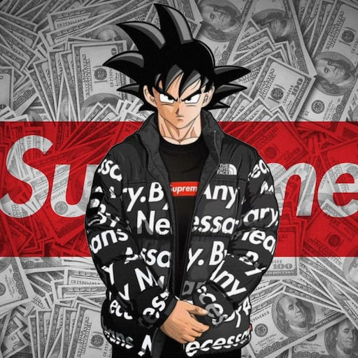

Dragon Ball Z es una de las series de anime más icónicas y queridas del mundo. Narra las aventuras de Goku y sus amigos mientras defienden la Tierra de poderosos enemigos, como los Saiyajines, Freezer, Cell, y Majin Buu. Con combates épicos y momentos emocionantes, ha dejado una marca indeleble en la cultura popular.
La historia de Dragon Ball Z comienza varios años después de los eventos de Dragon Ball, cuando Goku descubre que es un guerrero Saiyajin enviado a la Tierra. A lo largo de la serie, Goku y sus amigos enfrentan enemigos cada vez más poderosos mientras descubren nuevos niveles de poder, como el famoso Super Saiyajin.